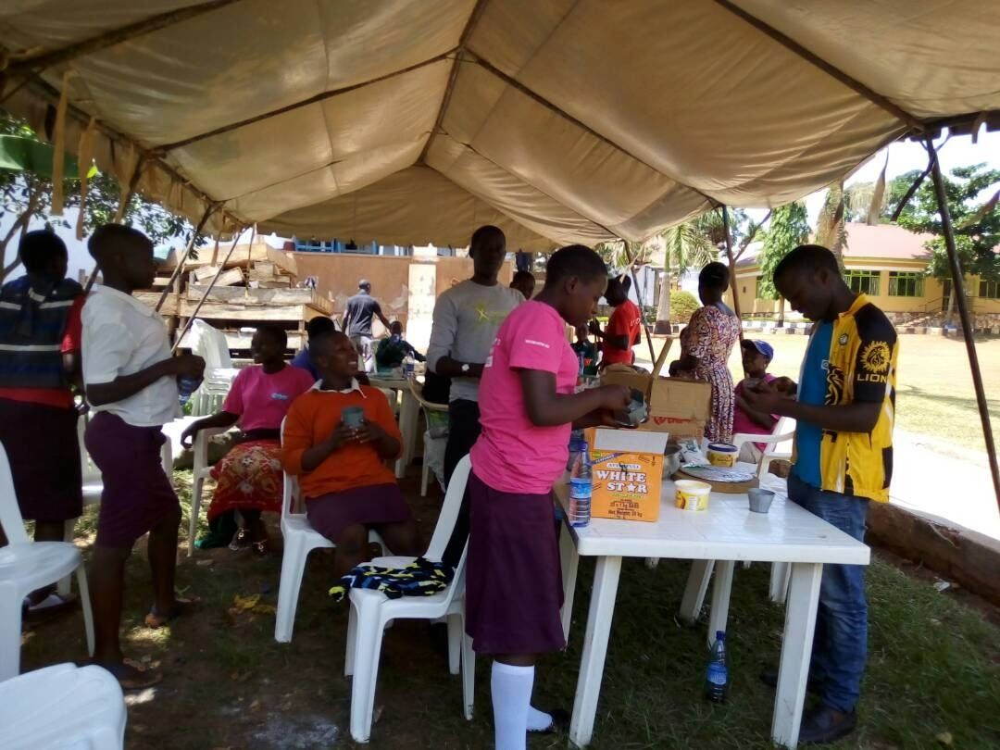
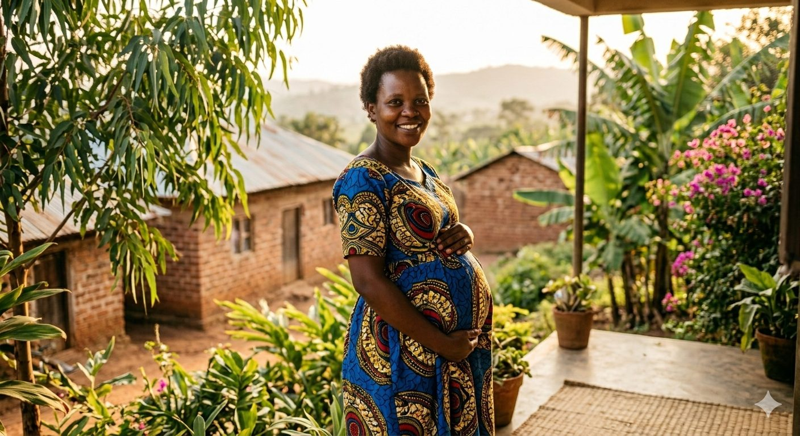

Our approach.
A youth-led, community-powered model that walks with mothers from pregnancy to one year after birth.
Care that starts at the household.
We focus on communities where maternal health needs are greatest, and where community-based and digital solutions can make the strongest impact.
- Household-level maternal support: mothers are reached at home, not only at the clinic
- Youth-led navigation and follow-up: trained young people from the same community
- Digital tools: linking mothers, navigators and health facilities
- Strong partnerships: with local leaders and healthcare providers

Three preventable delays.
Most maternal deaths follow one of three delays. Our navigators are placed to close each one.
1. Delay in recognising danger signs
Families do not always know which symptoms are urgent. Navigators teach danger signs early and check in regularly.
2. Delay in reaching a health facility
Distance, cost and transport can stand between a mother and care. Navigators coordinate emergency transport and referral.
3. Delay in receiving timely care
Facilities that are not expecting a mother lose precious minutes. Navigators alert them in advance for priority care.
A trusted companion from the first trimester to one year postpartum.
Register
A mother is registered through our helpline, a local health centre or a community health worker.
Meet your navigator
A trained youth navigator from her community stays with her throughout.
Visits and reminders
Home visits, health education and SMS reminders for every check-up.
Help when it matters
In an emergency the navigator coordinates transport and alerts the facility.

Young people, equipped to serve.
Navigators are recruited from local communities, aged 18 to 30, and trained for free.
- A 40-hour core curriculum
- Supervised field training and monthly refreshers
- Certification pathway and ongoing mentorship
- Peer support groups
Rooted in community, powered by youth, strengthened by data.
- More mothers are accessing timely antenatal and postnatal care
- More families are prepared for childbirth
- More emergencies are handled quickly
- More young people are employed and empowered
- More communities are becoming safer for mothers

Low-tech by design.
SMS reminders, a digital referral system and a navigator training platform, built for places with limited connectivity.